Loading...
Items
Armas
Espada
Maza
Hacha
Espada dos manos
Maza dos manos
Hacha dos manos
Arco
Arma de Fuego
Reliquia
Bastón
Escudo
Arma mec. 1 mano
Arma mec. 2 manos
Cañon Pesado
Flechas
Balas de cañon
Llave de Cristal
Katana
Armadura
Cabeza
Cuerpo
Piernas
Manos
Piernas
Dorso
Accesorio
Mochila
Equipo Especial
Equipo 1 mano
Equipo 2 manos
Equipo Cabeza
Equipo Espalda
Cuerpo
Articulos de Talento
Talentos
Planos
Fragmentos
Skills
Piedras Mega
Sprite
Sprite
Monstruo Embotellado
Mochila
Formula Isla Sprite
Cria Isla Sprite
Receta Isla Sprite
Edificio Isla Sprite
Legados
Muebles Sprite
Emblema Sprite
Skill Book(Novice)
Skill Book(Intermediate)
Skill Book(Advanced)
Materiales
Mineria
Forraje
Caza
Materiales de equipo
Piedras de Equipo
Gema Prismatica
Piedra Runa
Piedra de Resonancia
Nucleos
Monturas
Tronos
Comb Talentos
Berserker
Paladin
Ranger
Asesino
Clerigo
Sabio
Mago
Nigromante
Artificiero
Artillero
Duelista
Relojero
Quest
Titulos
Skills
Berserker
Paladin
Ranger
Asesino
Clerigo
Sabio
Mago
Nigromante
Artificiero
Artillero
Duelista
Relojero
Sprites
Spanish
English
Español
Portuguese
French
Sugerencias
Contáctenos
Creditos
Haz Alquimia
F.A.Q
Hora
00
:
00
:
00
Horario Emisarios
<Avatar del Emisario> Heraldo de la Lujuria
Bosque Antiguo (X:290, Y:370) Lunes 20:35
<Emisario del Juicio Final Lunático> Locura de Lujuria
Valle de Caballeros (X:510.53, Y:619.852) Lunes 20:35
<Emisario Pesadilla> Voraz Ladona
Club de Lucha del Rey Sprite (X:134.088, Y:347.754) Lunes 15:30
<Emisario Antiguo> Justicia
Valle del Espíritu (X:439.138, Y:559.115) Lunes 20:30
<Emisario de Ilusión> Yen Alfa
Aldea Aura Ficticia (X:639.151, Y:232.943) Lunes 15:30
<Emisario de Ilusión> Zhong Iota
Sendero Llamafría (X:534.548, Y:578.733) Lunes 20:30
Skills Necromancer
Skills
Skills Pasivos
Nombre
Nivel
Efecto
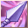
Cohete Mágico 1
Skills
×
Cohete Mágico 1
Cohete Mágico 2
Cohete Mágico 3
Cohete Mágico 4
Cohete Mágico 5
Cohete Mágico 6
Flecha Mágica Erosiva 1
Flecha Mágica Erosiva 2
Súper Flecha Mágica Erosiva 1
Súper Flecha Mágica Erosiva 2
6
Info
Cuchilla Desafilada 1
Skills
×
Cuchilla Desafilada 1
Cuchilla Desafilada 2
Cuchilla Desafilada 3
Cuchilla Desafilada 4
Cuchilla Desafilada 5
Cuchilla Desafilada 6
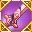
Cuchilla Destructiva 1
Cuchilla Destructiva 2
Cuchilla de Destrucción 1
Cuchilla de Destrucción 3
6
Info
Cañón de la Estrella Mágica 1
Skills
×
Cañón de la Estrella Mágica 1
Cañón de la Estrella Mágica 2
Cañón de la Estrella Mágica 3
Cañón de la Estrella Mágica 4
Cañón de la Estrella Mágica 5
Cañón de la Estrella Mágica
Cañón Misterioso 1
Cañón Misterioso 2
Súper Cañón Misterioso 1
Súper Cañón Misterioso 2
6
Info
Contragolpe Mágico 1
Skills
×
Contragolpe Mágico 1
Contragolpe Mágico 2
Contragolpe Mágico 3
Contragolpe Mágico 3
Contragolpe Mágico 4
Contragolpe Mágico 4
Contragolpe Mágico 5
Contragolpe Mágico 5
Contragolpe Mágico 6
Contragolpe Mágico 6
6
Info
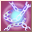
Grilletes Mágicos 1
Skills
×
Grilletes Mágicos 1
8
Info
Nube Tóxica 1
Skills
×
Nube Tóxica 1
Nube Tóxica 2
Nube Tóxica 3
Nube Tóxica 4
Nube Tóxica 5
Nube Tóxica 6
Gran Nube Tóxica 1
Gran Nube Tóxica 2
Súper Nube Tóxica 1
Súper Nube Tóxica 2
8
Info
Escudo Mágico 1
Skills
×
Escudo Mágico 1
Escudo Mágico 2
Escudo Mágico 3
Escudo Mágico 4
Gran Escudo Maná 1
Gran Escudo Maná 2
Súper Escudo Mágico 1
Súper Escudo Mágico 2
16
Info
Prisión de Cuchillas Danzantes 1
Skills
×
Prisión de Cuchillas Danzantes 1
Prisión de Cuchillas Danzantes 2
Prisión de Cuchillas Danzantes 3
Prisión de Cuchillas Danzantes 4
Prisión de Cuchillas Danzantes Reforzada 1
Prisión de Cuchillas Danzantes Reforzada 2
Prisión de Cuchillas Danzantes Máxima 1
Prisión de Cuchillas Danzantes Máxima 2
16
Info
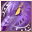
Invocar Sabueso Infernal 1
Skills
×
Invocar Sabueso Infernal 1
Invocar al Sabueso Infernal 2
Invocar al Sabueso Infernal 3
Invocar a Chacal Anubis 1
Invocar a Chacal Anubis 2
31
Info
Sombra de Flecha 1
Skills
×
Sombra de Flecha 1
Sombra de Flecha 2
Sombra de Flecha 3
Sombra de Flecha 4
Sombra de Flecha 5
Sombra de Flecha 6
Sombra de Flecha 7
Sombra de Flecha 8
Sombra de Flecha 9
Flecha Sombra Chocante 1
Flecha Sombra Chocante 2
Flecha Sombra Chocante 3
Flecha Sombra Chocante 4
Flecha Sombra Chocante 5
Flecha Sombra Caótica 1
Flecha Sombra Caótica 2
Flecha Sombra Caótica 3
Flecha Sombra Caótica 4
31
Info
Sangre de las Tinieblas 1
Skills
×
Sangre de las Tinieblas 1
Sangre de las Tinieblas 2
Sangre de las Tinieblas 3
Sangre de las Tinieblas 4
Sangre de las Tinieblas 5
Sangre de las Tinieblas 6
Sangre de las Tinieblas 7
Sangre de las Tinieblas 8
Sangre de las Tinieblas 9
Sangre Negra del Demonio 1
Sangre Negra del Demonio 2
Sangre Negra del Demonio 3
Sangre Negra del Demonio 4
Sabiduría de Sangre Negra 5
Infierno de Sangre Espesa 1
Infierno de Sangre Espesa 2
Sangre Espesa Infernal 3
31
Info
Orden de Asesinato
Skills
×
Orden de Asesinato
31
Info
Bomba de Sangre Sacrificio 1
Skills
×
Bomba de Sangre Sacrificio 1
Bomba de Sangre Sacrificio 2
Bomba de Sangre Sacrificio 3
Bomba de Sangre Sacrificio 4
Bomba de Sangre Sacrificio 5
Bomba de Sangre Sacrificio 6
Granada de Carne y Hueso 1
Granada de Carne y Hueso 2
Granada de Carne y Hueso 3
Granada de Carne y Hueso Gigante 1
Granada de Carne y Hueso Gigante 2
31
Info
Brote de Peste 1
Skills
×
Brote de Peste 1
Brote de Peste 2
Brote de Peste 3
Brote de Peste 4
31
Info
Extraer Vida 1
Skills
×
Extraer Vida 1
Extraer Vida 2
Extraer Vida 3
Extraer Vida 4
Extraer Vida 5
Extraer Vida 6
Roba-Vida 1
Roba-Vida 2
Roba-Vida 3
Consume Vida 1
Consume Vida 2
Consume Vida 3
32
Info
Neblina de Miedo 1
Skills
×
Neblina de Miedo 1
Neblina de Miedo 2
Neblina de Miedo 3
Neblina de Miedo 4
32
Info
Forma Fantasma 1
Skills
×
Forma Fantasma 1
Forma Fantasma 2
Forma Fantasma 3
Forma Fantasma 4
Forma Fantasma 5
Forma de Espejismo 1
Forma de Espejismo 2
Forma de Espectro 1
Forma de Espectro 2
Forma de Espectro 3
32
Info
Infestación Maligna 1
Skills
×
Infestación Maligna 1
Infestación Maligna 2
Infestación Maligna 3
Vínculo del Diablo 4
Vínculo del Diablo 1
Vínculo del Diablo 2
Vínculo del Diablo 3
32
Info
Diezmo del Maestro 1
Skills
×
Diezmo del Maestro 1
Diezmo del Maestro 2
Diezmo del Maestro 3
Diezmo del Maestro 4
Diezmo del Maestro 5
Diezmo del Maestro 6
Orden de Sacrificio 1
Orden de Sacrificio 2
Orden de Sacrificio 3
Orden de Sacrificio 4
Orden de Sacrificio 5
Orden de Sacrificio 5
32
Info
Toque de Plaga 1
Skills
×
Toque de Plaga 1
Toque de Plaga 2
Toque de Plaga 3
Toque de Plaga 4
Toque de Plaga 5
Toque de Plaga Mejorado 1
Toque de Plaga Mejorado 2
Plaga Contagiosa 1
Plaga Contagiosa 2
Plaga Contagiosa 3
32
Info
Invocar Mago Liche 1
Skills
×
Invocar Mago Liche 1
Invocar Mago Liche 2
Invocar Mago Liche 3
Invocar al Mago Infernal 1
Invocar al Mago Infernal 2
34
Info
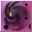
Exhausto 1
Skills
×
Exhausto 1
Exhausto 2
Exhausto 3
Mega Exhausto Mejorado 1
Mega Exhausto Mejorado 2
Maldición Brutal 1
Maldición Brutal 2
36
Info
Ruina Mental 1
Skills
×
Ruina Mental 1
Ruina Mental 2
Ruina Mental 3
Mega Ruina Mental 1
Mega Ruina Mental 2
Maldición Sabia 1
Maldición Sabia 2
36
Info
Maldita Maldición 1
Skills
×
Maldita Maldición 1
Maldita Maldición 2
Maldita Maldición 3
Maldita Maldición 4
Maldita Maldición 5
Maldita Maldición Mejorada 1
Maldita Maldición Mejorada 2
Maldita Maldición Mejorada 3
36
Info
Invocar al Gólem 1
Skills
×
Invocar al Gólem 1
Invocar al Gólem 2
Invocar Gólem 3
Invocar al Verdugo Infernal 1
38
Info
Marca de Pestilencia 1
Skills
×
Marca de Pestilencia 1
Marca de Pestilencia 2
Marca de Pestilencia 3
Marca de Pestilencia 4
Marca de Pestilencia 5
Marca de Pestilencia 6
Marca de Pestilencia 7
Mega Peste Sofocante 1
Mega Peste Sofocante 2
Mega Peste Sofocante 3
Mega Peste Sofocante 4
Mega Peste Sofocante 5
Marca Apestoso 1
Marca Apestoso 2
Marca Apestoso 3
Marca Apestoso 4
38
Info
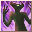
Frenesí Sangriento 1
Skills
×
Frenesí Sangriento 1
Frenesí Sangriento 2
Frenesí Sangriento 3
Monstruos Alborotados 1
Monstruos Alborotados 2
Demonio Frenético 1
Demonio Frenético 2
40
Info
Llamado del Abismo 1
Skills
×
Llamado del Abismo 1
Llamado del Abismo 2
Llamado del Abismo 3
Llamado del Abismo 4
Llamado del Abismo 5
Llamado del Abismo 6
Gran Demonio Infernal 5
Llamado del Abismo 7
Gran Demonio Infernal 1
Gran Demonio Infernal 2
Gran Demonio Infernal 3
Gran Demonio Infernal 4
Demonio Infernal 1
Demonio Infernal 2
Demonio Infernal 3
Demonio Infernal 4
40
Info
Obsequio de Oscuridad 1
Skills
×
Obsequio de Oscuridad 1
Obsequio de Oscuridad 2
Obsequio de Oscuridad 3
Obsequio de Oscuridad 4
Obsequio de Oscuridad 5
Ritual Tenebroso del Diablillo 1
Ritual Tenebroso del Diablillo 3
Ritual Tenebroso del Diablillo 2
Reino Tenebroso del Diablillo 1
Reino Tenebroso del Diablillo 2
Reino Tenebroso del Diablillo 3
40
Info
Come Almas 1
Skills
×
Come Almas 1
Come Almas 2
Come Almas 3
Come Almas 4
Devorador de Alma 1
Devorador de Almas 2
61
Info
Pared Rompe-Huesos 1
Skills
×
Pared Rompe-Huesos 1
Pared Rompe-Huesos 2
Pared Rompe-Huesos 3
Pared Rompe-Huesos 4
Pared Rompe-Huesos 5
Pared de Cadáver 1
Pared de Cadáver 2
61
Info
Posible Libertad
Skills
×
Posible Libertad
66
Info
Escapó Sin Dejar Rastro
Skills
×
Escapó Sin Dejar Rastro
66
Info
Golpe Tenebroso
Skills
×
Golpe Tenebroso
66
Info
Banquete de Espectro 1
Skills
×
Banquete de Espectro 1
Banquete de Espectro 2
Banquete de Espectro 3
Banquete de Espectro 4
Banquete de Espectro 5
Banquete de Espectro 6
Banquete de Espectro 7
Banquete de Espectro 8
Banquete de Espectro 9
66
Info
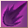
Lanza Oscura 1
Skills
×
Lanza Oscura 1
Lanza Oscura 2
Lanza Oscura 3
Lanza Oscura 4
Lanza Oscura 5
Lanza Maldita 1
Lanza Maldita 2
68
Info
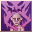
Abrazo de Espectro 1
Skills
×
Abrazo de Espectro 1
Abrazo de Espectro 2
Abrazo de Espectro 3
Abrazo de Espectro 4
Abrazo de Espectro 5
70
Info
Aliento de Espectro 1
Skills
×
Aliento de Espectro 1
Aliento de Espectro 2
Aliento de Espectro 3
Aliento de Espectro 4
Aliento de Espectro 5
Aliento de Espectro 6
Aliento de Espectro 7
70
Info
Llamado del Cielo
Skills
×
Llamado del Cielo
84
Info
Drenaje de Alma Máximo 1
Skills
×
Drenaje de Alma Máximo 1
Drenaje de Alma Máximo 2
Drenaje de Alma Máximo 3
Drenaje de Alma Máximo 4
86
Info
Peste Volátil 1
Skills
×
Peste Volátil 1
Peste Volátil 2
86
Info
Disipado Mágico 1
Skills
×
Disipado Mágico 1
Disipado Mágico 2
Disipado Mágico 3
Disipado Mágico 4
Disipado Mágico 5
86
Info
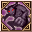
Invocar Gigante Maligno
Skills
×
Invocar Gigante Maligno
91
Info
Invocar Gigante Maligno Antiguo
Skills
×
Invocar Gigante Maligno Antiguo
91
Info
Necromancia
Skills
×
Necromancia
91
Info
Círculo Físico
Skills
×
Círculo Físico
91
Info
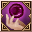
Magia Negra Prohibida
Skills
×
Magia Negra Prohibida
91
Info
Disipar Magia Negra
Skills
×
Disipar Magia Negra
91
Info
Nombre
Nivel
Efecto
Alma Fracturada a
Skills
×
Alma Fracturada a
Alma Fracturada ß
Alma Fracturada ß
Alma Fracturada d
6
Info
Mega Cañón Estrella Mágica 1
Skills
×
Mega Cañón Estrella Mágica 1
Mega Cañón Estrella Mágica 2
Mega Cañón Estrella Mágica 3
Mega Cañón Estrella Mágica 4
Mega Cañón Estrella Mágica 5
6
Info
Diestro en Magia
Skills
×
Diestro en Magia
6
Info
Mega Esposas Mágicas 1
Skills
×
Mega Esposas Mágicas 1
Mega Esposas Mágicas 2
Mega Esposas Mágicas 3
Mega Esposas Mágicas 4
Mega Esposas Mágicas 5
8
Info
Francotirador Mágico
Skills
×
Francotirador Mágico
16
Info
Mega Sombra de Flecha 1
Skills
×
Mega Sombra de Flecha 1
Mega Sombra de Flecha 2
Mega Sombra de Flecha 3
Mega Sombra de Flecha 4
Mega Sombra de Flecha 5
31
Info
Mega Bomba Sangre de Sacrificios 1
Skills
×
Mega Bomba Sangre de Sacrificios 1
Mega Bomba Sangre de Sacrificios 2
Mega Bomba Sangre de Sacrificios 3
Mega Bomba Sangre de Sacrificios 4
Mega Bomba Sangre de Sacrificios 5
31
Info
Mega Drena-Vida 1
Skills
×
Mega Drena-Vida 1
Mega Drena-Vida 2
Mega Drena-Vida 3
Mega Drena-Vida 4
Mega Drena-Vida 5
32
Info
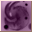
Mega Exhausto 1
Skills
×
Mega Exhausto 1
Mega Exhausto 2
Mega Exhausto 3
Mega Exhausto 4
Mega Exhausto 5
36
Info
Mega Ruina Mental 1
Skills
×
Mega Ruina Mental 1
Mega Ruina Mental 2
Mega Ruina Mental 3
Mega Ruina Mental 4
Mega Ruina Mental 5
36
Info
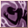
Mega Maldita Maldición 1
Skills
×
Mega Maldita Maldición 1
Mega Maldita Maldición 2
Mega Maldita Maldición 3
Mega Maldita Maldición 4
Mega Maldita Maldición 5
36
Info
Mega Peste Sofocante 1
Skills
×
Mega Peste Sofocante 1
Mega Peste Sofocante 2
Mega Peste Sofocante 3
Mega Peste Sofocante 4
Mega Peste Sofocante 5
38
Info
Mega Pared Rompe-Huesos 1
Skills
×
Mega Pared Rompe-Huesos 1
Mega Pared Rompe-Huesos 2
Mega Pared Rompe-Huesos 3
Mega Pared Rompe-Huesos 4
Mega Pared Rompe-Huesos 5
61
Info
Hechizo Sombra 1
Skills
×
Hechizo Sombra 1
Hechizo Sombra 2
Hechizo Sombra 3
66
Info
Corazón Necrófago 1
Skills
×
Corazón Necrófago 1
Corazón Necrófago 2
Corazón Necrófago 3
66
Info
Mega Exhausto Mejorado 1
Skills
×
Mega Exhausto Mejorado 1
Mega Exhausto Mejorado 2
Mega Exhausto Mejorado 3
Mega Exhausto Mejorado 4
Mega Exhausto Mejorado 5
66
Info
Mega Flecha Sombra Chocante 1
Skills
×
Mega Flecha Sombra Chocante 1
Mega Flecha Sombra Chocante 2
Mega Flecha Sombra Chocante 3
Mega Flecha Sombra Chocante 4
Mega Flecha Sombra Chocante 5
66
Info
Mega Ruina Mental Mejorada 1
Skills
×
Mega Ruina Mental Mejorada 1
Mega Ruina Mental Mejorada 2
Mega Ruina Mental Mejorada 3
Mega Ruina Mental Mejorada 4
Mega Ruina Mental Mejorada 5
66
Info
Mega Maldita Maldición Mejorada 1
Skills
×
Mega Maldita Maldición Mejorada 1
Mega Maldita Maldición Mejorada 2
Mega Maldita Maldición Mejorada 3
Mega Maldita Maldición Mejorada 4
Mega Maldita Maldición Mejorada 5
66
Info
Mega Peste Sofocante Mejorada 1
Skills
×
Mega Peste Sofocante Mejorada 1
Mega Peste Sofocante Mejorada 2
Mega Peste Sofocante Mejorada 3
Mega Peste Sofocante Mejorada 4
Mega Peste Sofocante Mejorada 5
66
Info
Mega Granada de Carne y Hueso 1
Skills
×
Mega Granada de Carne y Hueso 1
Mega Granada de Carne y Hueso 2
Mega Granada de Carne y Hueso 3
Mega Granada de Carne y Hueso 4
Mega Granada de Carne y Hueso 5
66
Info
Golpe de Demonio 1
Skills
×
Golpe de Demonio 1
Golpe de Demonio 2
Golpe de Demonio 3
Golpe de Demonio 4
Golpe de Demonio 5
Golpe de Demonio 6
66
Info
Mega Cañón Misterioso 1
Skills
×
Mega Cañón Misterioso 1
Mega Cañón Misterioso 2
Mega Cañón Misterioso 3
Mega Cañón Misterioso 4
Mega Cañón Misterioso 5
68
Info
Mega Roba-Vida 1
Skills
×
Mega Roba-Vida 1
Mega Roba-Vida 2
Mega Roba-Vida 3
Mega Roba-Vida 4
Mega Roba-Vida 5
68
Info
Marca de la Muerte 1
Skills
×
Marca de la Muerte 1
Marca de la Muerte 2
86
Info
Alma Mágica 1
Skills
×
Alma Mágica 1
Alma Mágica 2
Alma Mágica 3
Alma Mágica 4
Alma Mágica 5
86
Info
Retorno de la Aparición 1
Skills
×
Retorno de la Aparición 1
91
Info
Creditos
×
Desarrolladores:
Kougami
EX GS Angelique
Colaboradores:
EX GS Roshi
EX GS Marchel
Contáctenos
×
Correos de contacto
admin@grandfantasia-db.com